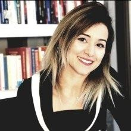

Psk. Dan. Neşe Cingisiz Kınacılar

Lisans eğitimimi 2006 yılında Mersin Üniversitesi Psikolojik Danışma ve Rehberlik bölümünde, yüksek lisansımı 2010 yılında Gaziantep Üniversitesi'nde tamamladım.
2006'dan bu yana farklı eğitim kurumlarında psikolojik danışman olarak çalıştım. Çocuk merkezli oyun terapisi, kum tepsisi terapisi, EMDR ve bilişsel davranışçı terapi alanlarında eğitimler aldım.
Eğitim
- Mersin Üniversitesi, PDR Lisans (2006)
- Gaziantep Üniversitesi, PDR Yüksek Lisans (2010)
Deneyim
- Logos Psikoloji
- Eğitim kurumlarında psikolojik danışmanlık (2006'dan bu yana)
Eğitimler ve sertifikalar
- Çocuk Merkezli Oyun Terapisi (APT)
- Kum Tepsisi Oyun Terapisi
- EMDR Travma Eğitimi
- Yetişkin ve Çocuklarla BDT
- Transaksiyonel Analiz
Çalışma yaklaşımı
Gizlilik
Görüşmeler meslek etiği gereği gizli tutulur.
Yargısız alan
Kendinizi rahatça ifade edebileceğiniz güvenli bir ortam.
Ortak hedefler
Terapinin yönü ve hedefleri sizinle birlikte belirlenir.
Terapi süreci
Kendi hızınızda ilerleyen, birlikte planlanan bir süreç.
Ön görüşme
Sizi bu sürece getiren konu ve beklentileriniz hakkında ilk görüşme yapılır.
Değerlendirme
Gerekli durumlarda görüşme ve testlerle ihtiyacınız netleştirilir.
Terapi süreci
Ortak belirlenen hedefler doğrultusunda düzenli seanslar planlanır.
Kapanış ve izlem
Kazanımlar birlikte değerlendirilir, gerekirse izlem görüşmeleri yapılır.
Size uygun bir saat bulalım
Formu doldurun ya da arayın, randevunuzu birlikte planlayalım.
Randevu oluşturun